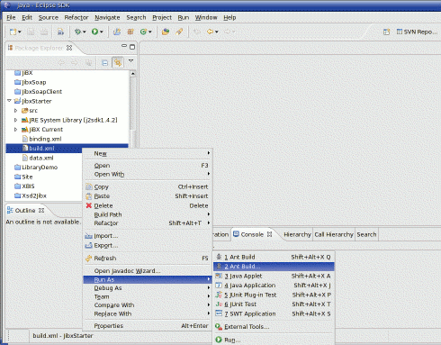
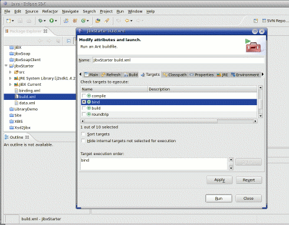
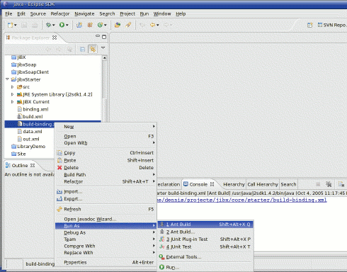
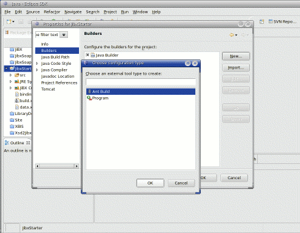
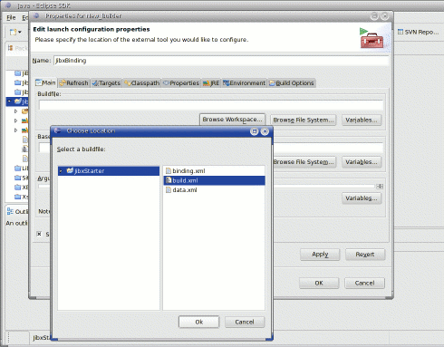
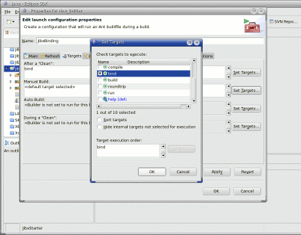

Using the Binding Compiler |
|
Using the Binding Compiler |
|
Running the compiler directlyOnce you have a binding definition, you need to compile the bindings into your class files with the JiBX binding compiler. The easy way to do this is to run the binding compiler straight from the supplied jibx-bind.jar file in the /lib directory of the distribution. For instance, if the JiBX installation is in /home/dennis and you're in the root of your application's class file directory with a binding file named binding.xml you can just run: java -jar /home/dennis/jibx/lib/jibx-bind.jar binding.xml JiBX will automatically include the current directory in the class load path when you run it this way. It'll need to have access to all the classes included in the binding definition, though, along with any superclasses of those classes, so you may need to include other class load root directories or jar files in the classpath. Unfortunately, this won't work properly when you run the binding compiler directly from the jar. You instead need to specify the compiler class directly, and include the jibx-bind.jar in your classpath as follows (in a single line, shown split here only for formatting): java -cp .:lib/support.jar:/home/dennis/jibx/lib/jibx-bind.jar
org.jibx.binding.Compile binding.xmlAs when the binding compiler is run directly from the jar, you need to have the jibx-bind.jar file in the same directory as the other jar files from the /lib directory of the distribution for this to work correctly. Note that this is the Unix/Linux version of the command line; if you're (sadly) running Windows (or MS-DOS) you'll need to reverse the slashs and use ';' instead of ':' as a path separator character. Without any options, the JiBX binding compiler won't print anything to the
console unless there's an error in compiling the bindings. If you want to see a
detailed list of classes modified or generated by the binding compiler you can
pass an option of If you just want to validate the modified or generated classes without a
detailed listing you can use an option of You can rerun the binding compiler at any time, and must rerun the binding compiler if you recompile any of the bound classes. If your class files have not been recompiled and the bindings haven't changed since the last time you ran the binding compiler it won't modify any of the classes. If you do change either the class files or the binding definitions only those classes effected by the change will be modified. Binding compiler Ant taskIf you're using Ant as a project build tool JiBX provides an even easier way of running the binding compiler, by using a custom Ant task. To make use of this in your Ant build.xml file you'll first need to add a custom task definition like this (with the jibx-lib property set to the appropriate path to the lib directory of your JiBX installation): <!-- JiBX binding compiler task definition -->
<taskdef name="bind" classname="org.jibx.binding.ant.CompileTask"
classpath="${jibx-lib}/jibx-bind.jar"/>
Then you'll be able to invoke the binding compiler during the build process like this: <!-- Run JiBX binding compiler -->
<bind verbose="true" load="true" binding="binding.xml">
<classpathset dir="classes"/>
</bind>
One issue to note with the Ant task is that if you're using default values you'll need to include the jibx-run.jar from the distribution in the classpath passed when you invoke the task: <!-- Run JiBX binding compiler -->
<bind verbose="true" load="true" binding="binding.xml">
<classpath>
<pathelement path="classes"/>
<pathelement location="${jibx-lib}/jibx-run.jar"/>
</classpath>
</bind>
Here's the full description of the attributes and nested elements supported by the JiBX Ant task:
Binding with IDEsRunning the JiBX binding compiler can be a problem when using IDEs, since IDEs generally assume that they have total control over the compiled class files. If the IDE overwrites a class file which has been modified by the JiBX binding compiler the binding will no longer be usable. The solution is just to run the binding compiler again - but having to do that manually every time the IDE modifies the files can be painful, especially if the binding compiler cannot be run from inside the IDE. Plugin development for various IDEs is an area where developers can make very useful contributions to the JiBX project. Some preliminary work has been done on developing an Eclipse plugin for the JiBX binding compiler, but the code is currently unmaintained and the plugin does not support the current version of JiBX. Even if that plugin again becomes active, it wouldn't be of use to developers using other IDEs. Fortunately, most modern IDEs offer support for using Ant builds. If you include an Ant build.xml as part of your project, you can generally run a target within that build easily from your IDE. This technique works especially well if you set up a separate Ant build file with the binding compiler executed by the default target. There's a sample of this approach in the "starter" project provided in the JiBX distribution, which includes both a normal Ant build.xml with all the steps needed to build the project, and a separate build-binding.xml Ant build file intended for easy use of the binding compiler within an IDE. The remainder of this section uses the starter project to illustrate running the binding compiler through Ant within Eclipse. Running an Ant target within EclipseIt's reasonably easy to run an Ant target in a build.xml file within an Eclipse project. You can right-click on the build.xml file to get a context menu, select the Run As item, and the Ant Build... (click on this image for a full-size image):. This brings up a dialog box, which allows you to select the specific build target to be executed, as shown below: You can also use a separate Ant build for the JiBX binding compiler step, making the binding compiler target the default target for the build. This makes it simpler to run the target from Eclipse, since you can avoid the target selection dialog step from the above sequence. Just select Run As and then Ant Build from the context menu for the build file: This approach is flexible, in that you can run the binding compiler any time you want. It does require you to take a manual action to trigger the execution, but remember that you only need to run the binding compiler when you're actually going to use the bindings (as part of your debugging, for instance). Defining a build step in EclipseBesides running an Ant target on command, you can make the execution of one or more targets from an Ant build part of the normal build of your project. To do this, go to the project properties (from the right-click context menu on the project name, or from the File menu with the project name selected) and select the Builders pane. From this you can then add an Ant build as a new builder for the project: Just clicking OK brings up the builder properties dialog. On this dialog you can change the name of the builder from the default, and then click on Browse Workspace... under the Buildfile path to bring up a selection dialog: By default, an Ant builder will only run the default target for the build. If running the binding compiler is not the default target for the build, you can go into the Targets tab of the dialog to change the target to be run by the builder: This step needs to be done for each form of activation of the builder (the different areas within the Targets tab). By setting the appropriate target for After a "Clean" the builder will be run everytime you execute a Clean... build (from the Project menu). This is especially useful for working on projects with other developers, where a clean build is You can also set the target for Auto Build in order to run the binding compiler step every time a file is automatically recompiled by Eclipse, but this setting can be very intrusive. Since you only need to run the binding compiler when one of the classes included in the binding is modified, it's generally easier to just run the binding Ant build directly (using the Run As technique, described in the previous section) as needed, while using the builder approach to apply the binding on clean builds of the project. |
||||||||||||||||||||||
{kind=link}
{kind=link}
{kind=link}
{kind=link}
{kind=link}
{kind=link}